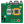
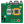

Ingénieur en développement logiciel chez Spacebel depuis septembre 2022, je gère l'opération des simulateurs numériques de satellites en orbite basse pour le CNES.
Parallèlement, je suis enseignant vacataire à l'IPSA de Toulouse depuis octobre 2022, où je dispense des cours en électronique numérique (pour les étudiants de 2e année de cycle préparatoire intégré) et en bases de données (pour les étudiants de 1re année du cycle ingénieur).
Diplômé ingénieur de l'IPSA (promotion 2020), j'ai choisi l'option "Systèmes embarqués" avec la majeure "Espace, Lanceurs et Satellites". J'ai également été major de la promotion ELSS.
Durant ma spécialisation, j'ai acquis des compétences solides en programmation (Python, Matlab, C/C++) et me suis initié à des domaines variés comme l'astrophysique, la mécanique spatiale et la détection d'exoplanètes par photométrie.
J'ai également de bonnes connaissances en optique géométrique et ondulatoire appliquées au spatial, ainsi qu’en électronique (analogique et numérique), en systèmes embarqués et en bases de données SQL.

Actuellement en charge de la gestion opérationnelle des simulateurs numériques de satellites pour le CNES, avec pour missions :
- Analyse et diagnostic des pannes sur les simulateurs de satellites en orbite basse.
- Formation des ingénieurs sur l'utilisation et la maintenance des simulateurs.
- Réalisation d'essais et suivi des procédures de maintien de compétences pour les équipes.


Enseignant vacataire pour plusieurs modules à l'IPSA, avec des responsabilités incluant :
- 1re année cycle ingénieur : Enseignement des bases de données relationnelles (MySQL, SQLite) et encadrement des Travaux Dirigés (TD) et Travaux Pratiques (TP).
- 2e année cycle préparatoire intégré : Encadrement des cours et TP en électronique numérique, incluant l'algèbre de Boole et la réalisation de circuits logiques avec des MOSFET et diodes.
- Enseignement de Matlab et Simulink pour les applications en automatique et systèmes dynamiques.
 

Travail en R&D sur les fonctions GNC (Guidance, Navigation, and Control) embarquées et autonomes :
- Études théoriques et pratiques des fonctions GNC pour la restitution d'orbites et le maintien à poste des satellites.
- Développement d'une bibliothèque en C pour l'implémentation de filtres de Kalman adaptés aux besoins de restitution d'orbite.
- Analyse et validation des modèles de simulation pour ces fonctions dans un environnement spatial.
Mission chez MBDA en tant que consultant, responsable de la conception et du développement d'applicatifs pour les tests et la validation de systèmes complexes :
- Développement d'ensembles de programmes pour les tests de sous-systèmes.
- Analyse des spécifications techniques et mise en place des environnements de test associés.
- Rédaction de la documentation et gestion de la configuration des programmes de test.
Travail sur l'interférométrie à dérive de fréquence pour mesurer la lumière parasite sur l'instrument spatial MOSA du projet LISA :
- Étude du bruit de fond et des sources de non-linéarité, et développement de méthodes pour limiter leur impact sur les mesures.
- Conception et tests du système de pilotage du laser pour un balayage linéaire de la fréquence.
- Développement de la séquence de tests pour la lumière parasite sur le banc d'essai MOSA.

Stage au sein du groupe RENOIR / LISA pour la mise en place d’un banc interférométrique de mesure des ondes gravitationnelles :
- Contrôle des composants du banc à distance via un réseau LAN au Gbit/s.
- Développement d'une interface Python pour la surveillance des signaux électriques.
- Traitement en temps réel des signaux issus des phasemètres pour l'analyse de la densité spectrale d'amplitude.

Stage en électrotechnique, où j’ai effectué des missions de maintenance et d'inventaire :
- Contrôle de conformité des machines à vérifier (1 500 machines sur le territoire).
- Réalisation de rapports et gestion de la maintenance des équipements.
Stage ouvrier à la mairie de Rinxent, où j’ai participé à diverses tâches d’entretien et d’aménagement :
- Maintenance des bâtiments communaux et réfection du stade de football communal.
- Organisation et mise en œuvre d’un spectacle pyrotechnique pour la fête nationale du 14 juillet (titulaire du C4-T2 de niveau 1).